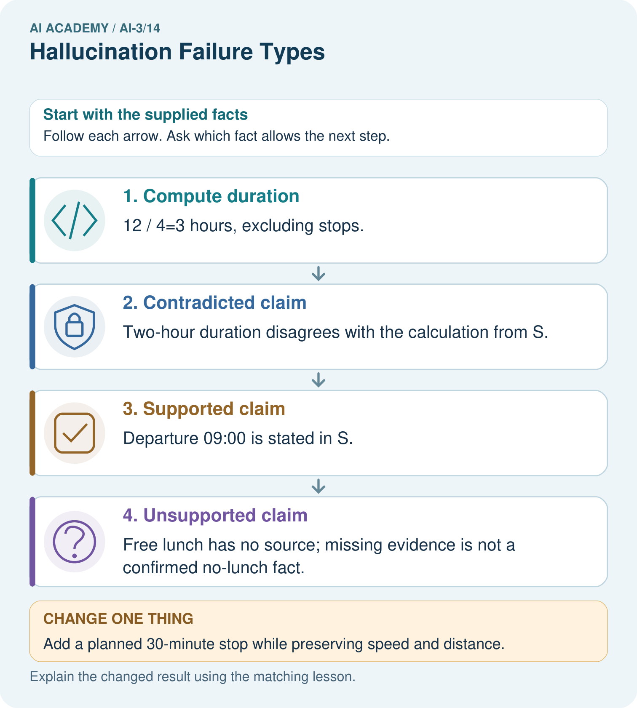
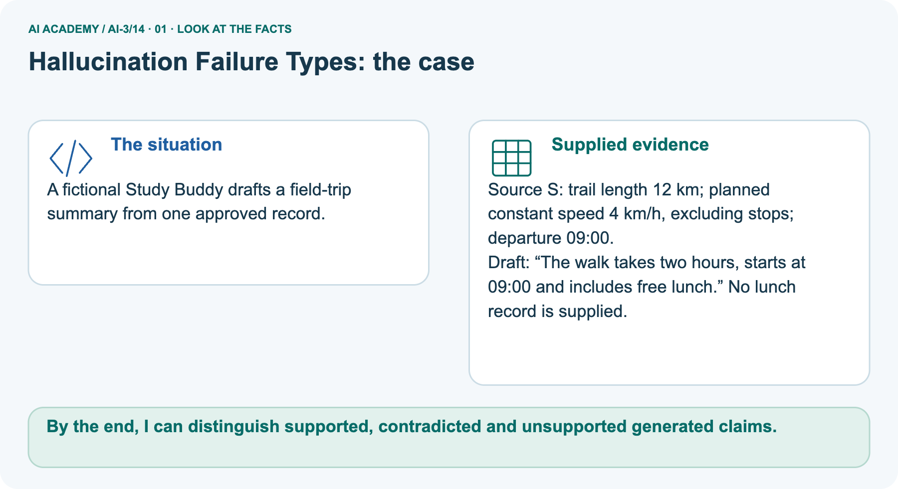
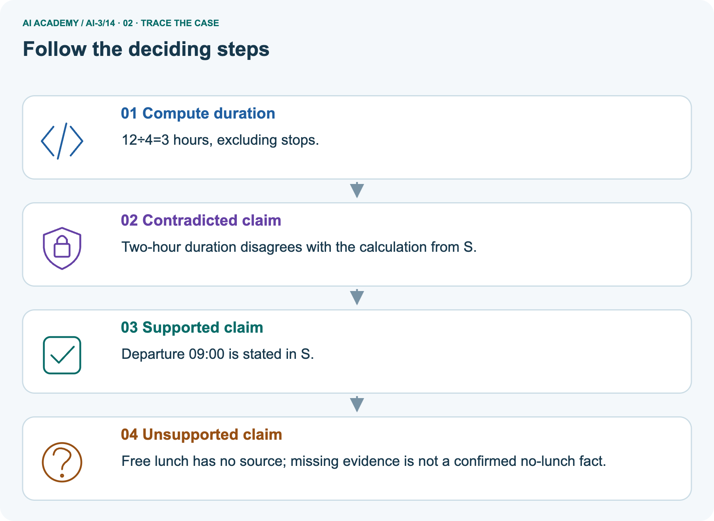
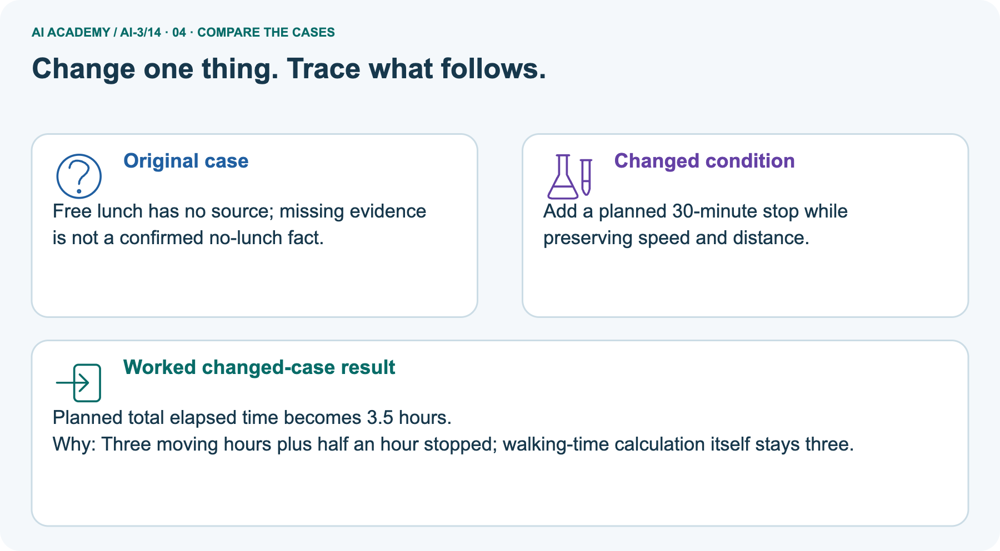
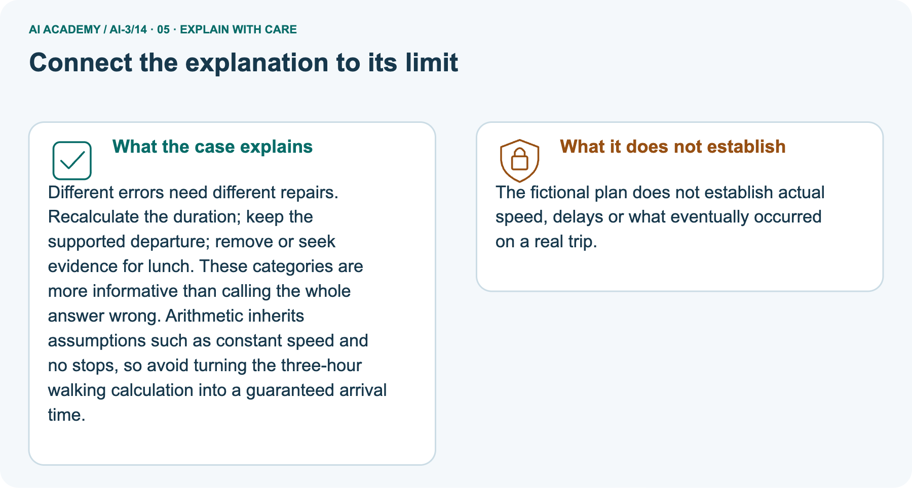
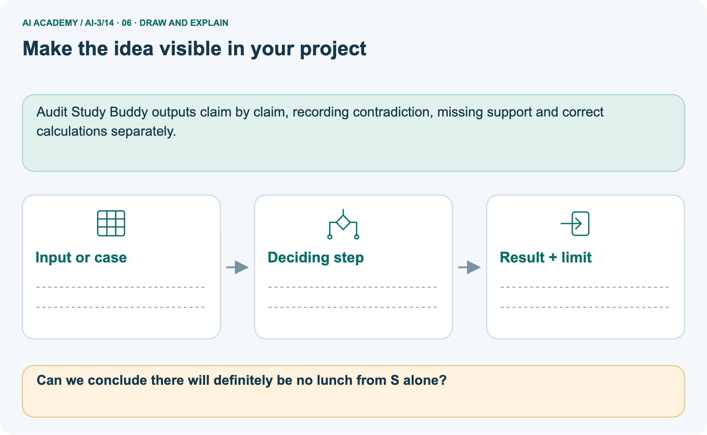

AI Academy · Level 3 · Grade 8 · Week 14 · Workbook
Hallucination Failure Types
Learn to understand, design, build, test and explain AI systems responsibly.
Project: Verified Study Buddy
Workbook · 1 of 21
Recall and choose your starting point
Record your starting explanation for Hallucination Failure Types before opening notes. Show any later correction separately.
Try the recall before opening notes. Then use a different colour or a labelled second line to correct your explanation.
Multimodal Evidence
Without opening the old lesson, explain one key idea from Multimodal Evidence. Give an example and a mistake that the idea helps you avoid.
Visual Composition
Without opening the old lesson, explain one key idea from Visual Composition. Give an example and a mistake that the idea helps you avoid.
Structured Output and Schemas
Without opening the old lesson, explain one key idea from Structured Output and Schemas. Give an example and a mistake that the idea helps you avoid.
Workbook · 2 of 21
Practise with fading help
Complete the supported Hallucination Failure Types trace and record the first step you can explain without help.
Use W2: Trace the worked case for Generation failures and verification. Record the answer once; the lesson and workbook refer to the same attempt.
| Given inputs | Procedure I chose | Middle steps | Result and check |
|---|---|---|---|
Workbook · 3 of 21
Individual reasoning check
Check the proposed Hallucination Failure Types explanation against the supplied facts before discussing it.
Use the worked case for Generation failures and verification. Proposed explanation: “The worked result establishes every future case”. Decide whether this explanation is supported.
Point to the step or supplied fact that decides; explain your repair if needed.
Workbook · 4 of 21
Independent transfer case
Write one first attempt at the reserved independent case before feedback. Repeated copies of that case refer to the same recorded attempt.
Independent case: Apply a new case independently
Source S: trip is 18 km; vehicle speed is 6 km/h, constant, excluding stops. Answer says 2 hours, 18 km and includes lunch. Audit and recalculate.
Attempt this case before feedback. Record any help. Earlier examples below are further practice; a case already practised with feedback cannot establish fresh transfer.
Workbook · 5 of 21
Your learning target
Connect the Hallucination Failure Types target to a trace and a justified conclusion.
A generated answer contains a nonexistent quote, a real source unrelated to the claim and a correct sum using the wrong input. Classify the three failures and their repairs.
Workbook · 6 of 21
Solve the given case
Solve the supplied Hallucination Failure Types case and show the deciding evidence.
An answer invents a quotation, cites a source lacking it and supplies an impossible date.
Separate the failures and checks.
Show your trace, calculation or evidence
Workbook · 7 of 21
Check a changed case
Apply the procedure to the changed case and record why the conclusion follows.
An answer gives a book title that does not exist and quotes words absent from the cited passage. Identify two failures and a repair.
My independent answer and reason
Week 14 Test and reflect
Workbook · 8 of 21
Design a revealing test
Specify a changed input, expected result and observation separately.
Create a changed input, boundary case or missing-information case. Write the expected answer or safe response before testing.
| Test record | My evidence |
|---|---|
| Changed input or condition | |
| Expected answer or fallback | |
| Observed result | |
| Why the result occurred |
Workbook · 9 of 21
Project checkpoint
Justify what Hallucination Failure Types adds to Verified Study Buddy and keep the evidence.
Study Buddy must distinguish source-backed claims, calculations, and unverified generation.
The project change and evidence I will keep
Workbook · 10 of 21
Self check
Judge explanation, evidence, transfer and limits separately; attach the work behind your judgement.
- I can explain the mechanism.
- I can show evidence.
- I can handle a changed case.
- I can name a limit.
Mark each as not yet, with help or independently, and attach supporting work.
Teacher review ____________________ Next step ____________________
Workbook · 11 of 21
Transfer practice from the original programme
Use this earlier case as transfer practice. A case already discussed with feedback is not fresh assessment evidence.
A generated answer contains a nonexistent quote, a real source unrelated to the claim and a correct sum using the wrong input. Classify the three failures and their repairs.
Record support used: none, hint or teacher explanation.
Workbook · 12 of 21
W1 Explain the mechanism
Explain the mechanism. Apply the supplied Hallucination Failure Types facts and keep your reasoning.
Where to find the supplied example
Reference for this exercise: open this week’s student lesson, “Hallucination Failure Types”, at “See how it works” and “Follow a worked example”. Use the original worked values or code named in the question; the later pictorial case is a separate example. Keep this reference beside your workbook while practising.
Explain the weekly mechanism in your own words. Use the worked scenario to name its input, decision rule and output.
Workbook · 13 of 21
W2 Trace the worked case
Trace the worked case. Apply the supplied Hallucination Failure Types facts and keep your reasoning.
Source R says room B seats 12 and the meeting starts at 15:00. Generated answer says B seats 20, starts at 15:00 and includes free lunch. Show the intermediate steps and give the conclusion with its scope.
Workbook · 14 of 21
W3 Audit the limit
Audit the limit. Apply the supplied Hallucination Failure Types facts and keep your reasoning.
A report omits this qualification: Source agreement and arithmetic validity are separate checks; missing evidence is not proof of the opposite claim.
Explain how omitting it could change a reader's interpretation, and write an accurate replacement.
Workbook · 15 of 21
W4 Apply a new case independently
Attempt before feedback. If this repeats the selected independent case, reuse that first attempt; otherwise keep a separate record. Apply a new case independently. Apply the supplied Hallucination Failure Types facts and keep your reasoning.
Source S: trip is 18 km; vehicle speed is 6 km/h, constant, excluding stops. Answer says 2 hours, 18 km and includes lunch. Audit and recalculate.
Workbook · 16 of 21
W5 Design a revealing follow-up
Design a revealing follow-up. Apply the supplied Hallucination Failure Types facts and keep your reasoning.
Where to find the supplied example
Reference for this exercise: open this week’s student lesson, “Hallucination Failure Types”, at “See how it works” and “Follow a worked example”. Use the original worked values or code named in the question; the later pictorial case is a separate example. Keep this reference beside your workbook while practising.
For the worked scenario, propose one additional case that could reveal a failure, describe its expected outcome before running it, and explain what would need to remain fixed for a fair comparison.
Do not reuse W4 as a new final test after receiving feedback.
Workbook · 17 of 21
Feedback, return check and learning record
Record the first repaired step and a different case to revisit after a delay.
| Evidence | My record |
|---|---|
| Worked alone / hint / model | |
| First step I repaired and why | |
| New case checked later; date and result | |
| What I can now explain without notes | |
| One remaining question |
Revisit this idea with your teacher after a delay. Familiarity is different from explaining and using it on a changed case.
Workbook · 18 of 21
Pictorial case practice: Hallucination Failure Types
A fictional Study Buddy drafts a field-trip summary from one approved record. Explain the labelled step before checking the changed condition.
A fictional Study Buddy drafts a field-trip summary from one approved record.
Source S: trail length 12 km; planned constant speed 4 km/h, excluding stops; departure 09:00.
Draft: “The walk takes two hours, starts at 09:00 and includes free lunch.” No lunch record is supplied.

Can we conclude there will definitely be no lunch from S alone?
Record the help used
Support used: alone / hint / worked example. This record is practice evidence.
Project connection: Audit Study Buddy outputs claim by claim, recording contradiction, missing support and correct calculations separately.
Workbook · 19 of 21
Project portfolio milestone
Keep this week’s input, deciding step, result and limit together in the Verified Study Buddy record.
Project: Verified Study Buddy
Current milestone: Test changed cases. Keep normal, boundary and failure cases; compare expected and observed results.
Audit Study Buddy outputs claim by claim, recording contradiction, missing support and correct calculations separately.
| Evidence to keep | My record |
|---|---|
| This week’s input and deciding step | |
| Prediction and actual result (or labelled paper trace) | |
| One change since the previous checkpoint and why | |
| One error or limit and the next test |
Workbook · 20 of 21
Supported practice and learning evidence
Try the supported questions before comparing with hints and feedback. Record what you repaired and the evidence you retained.
Use this supported practice once, in the browser or on paper. Keep the reserved independent assessment for a separate first attempt before teacher feedback.
A fictional Study Buddy drafts a field-trip summary from one approved record.
Practice 1: explain the deciding evidence
Which labelled step matches this detail? Free lunch has no source; missing evidence is not a confirmed no-lunch fact.
1. Unsupported claim
2. Supported claim
3. Contradicted claim
4. Compute duration
Hint · try first
Hint if needed: Read the steps in the pictorial case. Match the supplied detail to the stage that performs or records it.
Feedback · compare after trying
After your attempt, compare with the supported explanation: Unsupported claim Free lunch has no source; missing evidence is not a confirmed no-lunch fact. Different errors need different repairs.
Recalculate the duration; keep the supported departure; remove or seek evidence for lunch. These categories are more informative than calling the whole answer wrong.
Arithmetic inherits assumptions such as constant speed and no stops, so avoid turning the three-hour walking calculation into a guaranteed arrival time.
Practice 2: explain the deciding evidence
Changed case · predict first
Changed-case practice: Add a planned 30-minute stop while preserving speed and distance. Which conclusion is supported by the supplied facts?
1. We can decide the result without examining the changed input or the procedure.
2. Planned total elapsed time becomes 3.5 hours.
3. This one example guarantees correct results for every future input.
Hint · try first
Hint if needed: Use the changed condition and the deciding step in the pictorial trace. The answer must say what follows from those facts.
Feedback · compare after trying
After your attempt, compare with the supported explanation: Planned total elapsed time becomes 3.5 hours. Three moving hours plus half an hour stopped; walking-time calculation itself stays three.
Repair a missing building block
Review Multimodal Evidence (ai-3/13). Goal: Explain the mechanism and terminology of speech pipelines and multimodal evidence.
Short practice: Why were both “exactly three” and “exactly five” unsupported before opening the box?. Return to this week and explain what you changed.
Review Visual Composition (ai-3/11). Goal: Explain the mechanism and terminology of image generation and provenance. Short practice: Which checks pass after that single change, and what still needs repair?.
Return to this week and explain what you changed.
Review Structured Output and Schemas (ai-3/8). Goal: Separate JSON parsing, schema validation and source support checks. Short practice: Which object demonstrates that valid JSON and valid types are insufficient for truth?.
Return to this week and explain what you changed.
Keep your completed work
Use Download completed work in the hosted lesson to export your answers, reflections, practice feedback and code-run evidence. Open the HTML copy to read or print it.
Drafts stay in this browser when storage is available; clear drafts on a shared device.
Workbook · 21 of 21
Visual concept journey
Explain each Hallucination Failure Types picture from its labels, then record a relevant limit.
01. Hallucination Failure Types: the case

A fictional Study Buddy drafts a field-trip summary from one approved record. Supplied facts: Source S: trail length 12 km; planned constant speed 4 km/h, excluding stops; departure 09:00.
Draft: “The walk takes two hours, starts at 09:00 and includes free lunch.” No lunch record is supplied.
Point to the given fact that matters most. Explain why it matters.
02. Follow the deciding steps

Compute duration: 12÷4=3 hours, excluding stops. → Contradicted claim: Two-hour duration disagrees with the calculation from S. → Supported claim: Departure 09:00 is stated in S. → Unsupported claim: Free lunch has no source; missing evidence is not a confirmed no-lunch fact.
Point to each numbered stage and explain which recorded input it uses.
03. Generation failures and verification — evidence trace
![Generation failures and verification — evidence trace. Source R says room B seats 12 and the meeting starts at 15:00. Generated answer says B seats 20, starts at 15:00 and includes free lunch. | Split an answer into atomic claims. For each, record the exact source passage, support status and any needed calculation. Mark unsupported and contradicted claims separately; do not repair them by inventing sources. | Capacity 20 is contradicted; 15:00 is supported; free lunch is unsupported. One of three claims has support. The missing lunch fact is not evidence of no lunch.](../assets/academy-story-ai-3-14-03.png)
Generation failures and verification — evidence trace. Source R says room B seats 12 and the meeting starts at 15:00.
Generated answer says B seats 20, starts at 15:00 and includes free lunch. | Split an answer into atomic claims. For each, record the exact source passage, support status and any needed calculation.
Mark unsupported and contradicted claims separately; do not repair them by inventing sources. | Capacity 20 is contradicted; 15:00 is supported; free lunch is unsupported. One of three claims has support.
The missing lunch fact is not evidence of no lunch.
Read the labels and values. Explain the relationship the model shows.
04. Change one thing. Trace what follows.

Original case: Free lunch has no source; missing evidence is not a confirmed no-lunch fact. Changed condition: Add a planned 30-minute stop while preserving speed and distance.
Expected result: Planned total elapsed time becomes 3.5 hours. Reason: Three moving hours plus half an hour stopped; walking-time calculation itself stays three.
Predict before checking the worked changed-case result. Name what changed and what the supplied facts allow you to conclude.
05. Connect the explanation to its limit

Different errors need different repairs. Recalculate the duration; keep the supported departure; remove or seek evidence for lunch. These categories are more informative than calling the whole answer wrong.
Arithmetic inherits assumptions such as constant speed and no stops, so avoid turning the three-hour walking calculation into a guaranteed arrival time.
Limit: The fictional plan does not establish actual speed, delays or what eventually occurred on a real trip.
Explain the case, then point to a limit on the claim.
06. Make the idea visible in your project

Audit Study Buddy outputs claim by claim, recording contradiction, missing support and correct calculations separately. Draw your input, deciding step, result and limit.
Supported question: Can we conclude there will definitely be no lunch from S alone?
Draw your project trace and justify the deciding step using evidence.